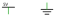
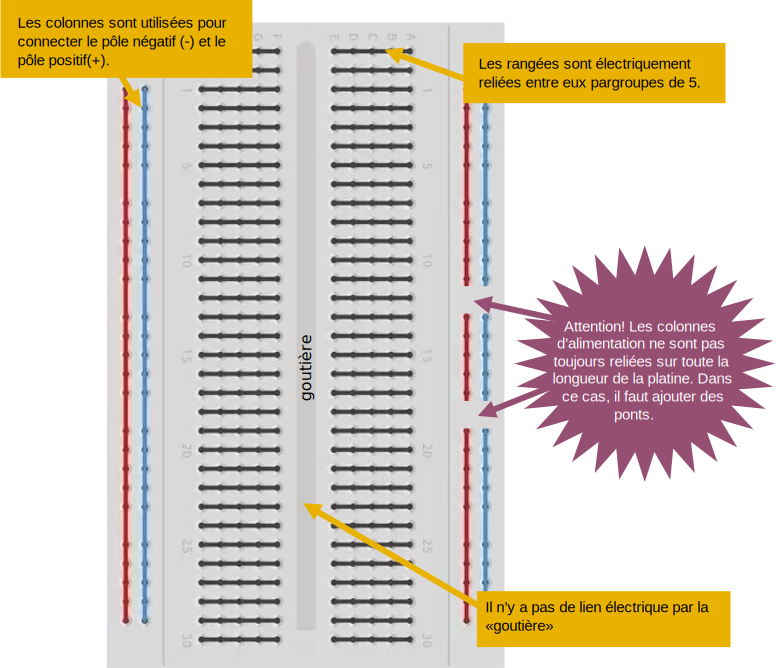
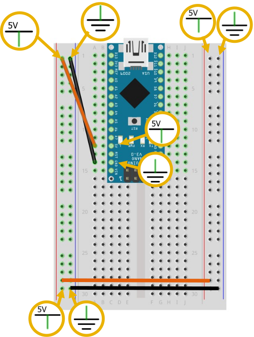
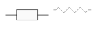
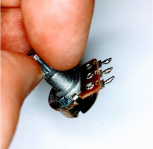

Introduction
Ce projet a été créé par Thomas Ouellet Fredericks et Guillaume Arseneault et financé par la fabrique REL.
Technologies utilisées :
- mdBook pour convertir les textes du format Markdown au format HTML.
- GitHub Actions pour automatiser le déploiement des fichiers sources au site tim-montmorency.com/rel-electro-immersif.
- Du JavaScript sur mesure pour ajouter automatiquement la description des figures sous celles-ci.
- GLightbox pour permettre l'intégration de la lecture des vidéos directement dans le site.
Le courant électrique
Le courant électrique est un déplacement d’électrons dans un milieu conducteur.
Pour que ces électrons se déplacent il faut créer une différence du nombre d'électrons entre les deux extrémités du circuit électrique. C'est ce qu'on appelle une différence de potentiel.
Alimentation
Pour créer cette différence de potentiel, on utilise une alimentation électrique qui peut prendre la forme d'une batterie, alimentation USB, panneau solaire, prise électrique , etc.

Une alimentation possède deux pôles. L'un positif (avec un potentiel haut) et l'autre négatif (avec un potentiel bas).

Boucle électrique
Pour circuler, le courant doit suivre une boucle entre les deux pôles de l'alimentation.

Principales grandeurs électriques
| Grandeur | Symbole | Unité | Analogie |
|---|---|---|---|
| Tension | U | Volts (V) | La pression qui génère la circulation des électrons |
| Intensité | I | Ampères (A) | La quantité d’électrons qui circule à un point |
| Résistance | R | Ohms (Ω) | Réduit la circulation des électrons (réduit la pression et la quantité) |
| Puissance | P | Watts (W) | La puissance résultant de la pression multipliée par la quantité |
Analogie de l'eau
Pression de l'eau ≈ tension électrique

Quantité d'eau ≈ intensité électrique

Étranglement de tuyau ≈ intensité électrique

Relations mathématiques entre les principales grandeurs électriques

Exemples

Symboles d'alimentation
Symboles qui regroupent les deux pôles


Représentation qui représentents les deux pôles de la même alimentation avec deux symboles


Platine d'expérimentation (breadboard)
Une platine d’expérimentation (breadboard en anglais) permet de réaliser des prototypes de circuits électroniques sans soudure et donc de pouvoir réutiliser les composants.
Certains des trous de la platine d'expérimentation sont connectés entre eux. Ces connexions sont indiquées par des lignes dans l'illustration suivante.

- Tous les trous dans une rangée intérieure de 5 sont reliés entre eux.
- Les trous des colonnes extérieures sont reliés entre eux. Ils sont réservés à l'alimentation :
- Colonne rouge pour le pôle positif (+).
- Colonne bleue pour le pôle négatif (-).
Bien placer les composants sur la platine d'expérimentation
Les broches (pattes) des composants doivent être insérés dans des trous qui sont non reliés électriquement, c'est à dire isolée électriquement.
Dans la figure suivante :
- Le X indique une erreur où un composant dont les broches sont insérées dans des trous reliés électriquement.
- Les ✓ indiquent des bonnes connexions où chaque broche du composant est isolé électriquement.

Dans la figure suivante :
- Le X indique une erreur où un composant dont les broches sont insérées dans des trous reliés électriquement.
- Les ✓ indiquent des bonnes connexions où chaque broche du composant est isolé électriquement.

Se servir d'une carte Arduino pour alimenter une platine d'expérimentation
Pôles de la carte Arduino Nano
Sur certains modèles de carte Arduino Nano, le pôle positif (+) n’est malheureusement pas imprimé sur la carte. Cependant, on retrouve dans la documentation des broche que c’est la broche au dessus de l'étiquette «RST».
Le pôle négatif (-) est indiqué avec l'étiquette «GND» imprimée sur la carte.

Étape 1
Branchez un câble (orange ou rouge) dans la rangée de la broche du positif (+) de la carte Arduino. Ce câble transporte maintenant le positif (+).
Branchez un câble (brun ou noir) dans la rangée de la broche du négatif (-) de la carte Arduino. Ce câble transporte maintenant le négatif (-)

Étape 2
Brancher le câble qui transporte le positif (+) dans la colonne + rouge de la platine d’expérimentation.
Brancher le câble qui transporte le négatif (-) dans la conne – bleue de la platine d’expérimentation.

Étape 3
Reliez les deux autres colonnes de la patine d'expériementation.

Erreur fatale : court circuit
Ici le pôle positif (+) et le pôle négatif (-) sont connectés dans la même colonne d'alimentation! Cette erreur fatale risque d'endommager l'alimentation USB de l'ordinateur!

Erreur fatale : inverser les pôles + et -
Ici le pôle positif (+) et le pôle négatif (-) sont inversés! Cette erreur fatale risque de détruire tous les composants!

Quoi faire en cas d'erreur fatale

Diode électroluminescente (DEL)
La diode électroluminescente (DEL) est un actionneur qui transforme un signal électrique en lumière. Elle est appelée «LED» en anglais.
En utilisant divers matériaux semi-conducteurs, on fait varier la couleur de la lumière émise par la DEL. Il existe enfin une grande variété de formes de DEL.
Le courant électrique ne peut traverser la diode que dans le sens de l’anode vers la cathode.

Attention: il faut limiter le courant qui traverse la DEL. Pour une DEL rouge standard:
- La DEL crée une chute de tension (voltage drop) d’environ 2.1 Volts.
- L'intensité qui traverse la DEL doit être d'environ 0.02 Ampères (20 mA).
- L’utilisation d’une résistance est obligatoire pour réduire l'intensité et ne pas griller la DEL.
Résistance

Une résistance est un composant électrique dont la principale caractéristique est d'opposer une plus ou moins grande résistance mesurée en ohms (Ω) à la circulation du courant électrique.
Une résistance est un milieu peu conducteur; les électrons peinent à s’y déplacer. Leur énergie se dissipe alors en général sous forme de chaleur. C’est ce principe utilisé pour les bouilloires électriques ou les ampoules à filaments. La valeur de la résistance se mesure en ohms (Ω) et elle est déterminée par ses bandes de couleurs.

Calculer la valeur d’une résistance
Pour connaître la valeur en ohms (Ω) d'une résitance, il faut convertir le code couleurs des 2 ou 3 premiers anneaux pour ensuite multiplier par le code de l'anneau suivant. La tolérance, représentée par le dernier anneau correspond à l’imprécision de la valeur en ohms. Plus elle est petite, plus la résistance est de meilleur qualité.

Exemple : rouge (2), rouge(2), brun (x10) = 22 * 10 = 220 Ω = 0.22 kΩ
Alimenter une DEL avec une batterie
Un schéma de circuit représente sous une forme plus précise les connexions des composants d’un circuit.
Le schéma et l’image ci-bas montrent tous les deux comment allumer une DEL avec une résistance et une batterie 9V.


Identification de l'alimentation

Identification de la résistance

Identitfication de la DEL

Alimenter une DEL avec la platine d'expérimentation
Portez attention à la longueur des pattes de la DEL. Une patte est plus longue que l’autre. Une DEL ne s’allume que si elle est branchée dans le bon sens.


Micro-soudure
Équipement essentiel


Tutoriels
- Tutoriel sous form de bande dessinée: SOUDER C'EST FACILE
- Vidéo d'introduction sur la soudure par KidzLab
Résumé de la technique de pointe

Multimètre: continuité
Mesurer la continuité avec un multimètre
Multimètre: mesure de résistance
Mesurer la résistance avec un multimètre
Modèles de cartes

Arduino Nano
Broches

Configuration de l'IDE d'Arduino
Installer le pilote de la carte Arduino Nano
Identifier le port de la carte Arduino Nano

Configurer le logiciel Arduino pour la carte Arduino Nano


Blink: le code test universel


Le code Arduino
Référence Arduino
Code minimal
// VARIABLE GLOBALES
void setup() {
// CODE À ROULER AU DÉMARRAGE
}
void loop() {
// CODE À RÉPÉTER (LE PLUS RAPIDEMENT POSSIBLE)
}
Nous retrouvons deux fonctions dans le code minimal :
- setup()
- loop()
setup()
La fonction setup() est appelée une seule fois lorsque le programme commence. C'est pourquoi c'est dans cette fonction que l'on va écrire le code qui n'a besoin d'être exécuté qu’une seule fois. C'est une fonction d'initialisation. On y retrouvera la mise en place des différentes sorties et quelques autres réglages.
loop()
Une fois que l'on a initialisé le programme, il faut ensuite créer le «cœur» du programme, autrement dit le programme en lui même. C'est dans la fonction loop() que l’on va écrire le contenu du programme. Il faut savoir que cettefonction est appelée en permanence, c'est-à-dire qu'elle est exécutée une fois, puis lorsque son exécution est terminée, on la réexécute, encore et encore. On parle de boucle infinie!
Déroulement du programme

Les instructions

Variables de base

Analyse du code «Blink»

Ressources
Bien coder
FLOSS Manuals: Comment-Bien-Structurer-Son-Code / Arduino
Sortie numérique
Il est possible de régler la tension présente à la plupart des broches de la carte Arduino.
Cette tension peut être réglée à deux niveaux :
HIGH: règle la tension de sortie à 5V (pôle positif)LOW: règle la tension de sortie à 0V (pôle négatif/GND)
Pour régler la tension électrique de sortie d'une broche, nous utilisons la paire de fonctions suivantes :
- Configurer la broche
numeroBocheen mode sortie avecOUTPUT:
pinMode( numeroBoche , OUTPUT );
- Régler la tension avec l’une des commandes suivantes : Pour règler la tension de sortie à 5V (pôle positif)
digitalWrite( numeroBoche, HIGH );
Pour règler la tension de sortie à 0V (pôle négatif/GND)
digitalWrite( numeroBoche, LOW );
Contrôler une DEL
Segment de circuit

Circuit complet

Comparaison avec le circuit d'alimentation simple

Fonctions pertinentes


Fonction additionnelle

Code complet
const int sortieNumeriqueDel = 3;
void setup() {
pinMode(sortieNumeriqueDel, OUTPUT);
}
void loop() {
digitalWrite(sortieNumeriqueDel, HIGH);
delay(1000);
digitalWrite(sortieNumeriqueDel, LOW);
delay(1000);
}
Entrée numérique
Jusqu'à maintenant, nous avons traité des sorties (OUTPUT). Grâce à la commande digitalWrite() on peut contrôler la tension électrique d'un broche :
- haute tension :
HIGH - basse tension :
LOW
Nous avons utilisé jusqu’ici cette différence de potentiel pour allumer des DEL.
Si une broche est configurée en entrée (INPUT), nous pouvons effectuer la mesure numérique de la tension électrique. Cette mes
s’effectue sure une échelle à deux niveaux :
- haute tension :
HIGHprésence d’une tension plus grande que 3.5V - basse tension :
LOWprésence d’une tension sous 1.5 V
En fonction du signal reçu, le microcontrôleur pourra effectuer une tâche prévue (allumer la lumière lorsqu'un capteur de mouvement détecte une présence, par exemple).
Pour mesurer la tension électrique présente à une broche, nous utilisons la paire de fonctions suivantes :
- Configurer la broche
numeroBocheen mode entrée avecINPUT_PULLUP:
pinMode( numeroBoche , INPUT_PULLUP );
- Effectuer la mesure de la tension à la broche
numeroBocheet sauvegarder la valeur dans une variable :
int mesureDeTension;
mesureDeTension = digitalRead( numeroBoche );
Interrupteur
Bouton poussoir


Bouton d'arcade
Référence du produit
Microsoudure du bouton


Potentiomètre

Microsoudure du potentiomètre

